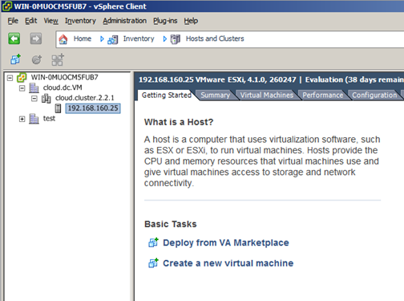

Configuring your CloudStack Installation¶
This section tells how to add regions, zones, pods, clusters, hosts, storage, and networks to your cloud. If you are unfamiliar with these entities, please begin by looking through Cloud Infrastructure Overview
Overview of Provisioning Steps¶
After the Management Server is installed and running, you can add the compute resources for it to manage. For an overview of how a CloudStack cloud infrastructure is organized, see Cloud Infrastructure Overview
To provision the cloud infrastructure, or to scale it up at any time, follow these procedures:
- Define regions (optional). See Adding Regions (optional).
- Add a zone to the region. See Adding a Zone.
- Add more pods to the zone (optional). See Adding a Pod.
- Add more clusters to the pod (optional). See Adding a Cluster.
- Add more hosts to the cluster (optional). See Adding a Host.
- Add primary storage to the cluster. See Add Primary Storage.
- Add secondary storage to the zone. See Add Secondary Storage.
- Initialize and test the new cloud. See Initialize and Test.
When you have finished these steps, you will have a deployment with the following basic structure:
Adding Regions (optional)¶
Grouping your cloud resources into geographic regions is an optional step when provisioning the cloud. For an overview of regions, see About Regions
The First Region: The Default Region¶
If you do not take action to define regions, then all the zones in your cloud will be automatically grouped into a single default region. This region is assigned the region ID of 1. You can change the name or URL of the default region by displaying the region in the CloudStack UI and clicking the Edit button.
Adding a Region¶
Use these steps to add a second region in addition to the default region.
Each region has its own CloudStack instance. Therefore, the first step of creating a new region is to install the Management Server software, on one or more nodes, in the geographic area where you want to set up the new region. Use the steps in the Installation guide. When you come to the step where you set up the database, use the additional command-line flag
-r <region_id>to set a region ID for the new region. The default region is automatically assigned a region ID of 1, so your first additional region might be region 2.# cloudstack-setup-databases cloud:<dbpassword>@localhost --deploy-as=root:<password> -e <encryption_type> -m <management_server_key> -k <database_key> -r <region_id>By the end of the installation procedure, the Management Server should have been started. Be sure that the Management Server installation was successful and complete.
Now add the new region to region 1 in CloudStack.
- Log in to CloudStack in the first region as root administrator (that is, log in to <region.1.IP.address>:8080/client).
- In the left navigation bar, click Regions.
- Click Add Region. In the dialog, fill in the following fields:
- ID. A unique identifying number. Use the same number you set in the database during Management Server installation in the new region; for example, 2.
- Name. Give the new region a descriptive name.
- Endpoint. The URL where you can log in to the Management Server in the new region. This has the format <region.2.IP.address>:8080/client.
Now perform the same procedure in reverse. Log in to region 2, and add region 1.
Copy the account, user, and domain tables from the region 1 database to the region 2 database.
In the following commands, it is assumed that you have set the root password on the database, which is a CloudStack recommended best practice. Substitute your own MySQL root password.
First, run this command to copy the contents of the database:
# mysqldump -u root -p<mysql_password> -h <region1_db_host> cloud account user domain > region1.sqlThen run this command to put the data onto the region 2 database:
# mysql -u root -p<mysql_password> -h <region2_db_host> cloud < region1.sql
Remove project accounts. Run these commands on the region 2 database:
# mysql> delete from account where type = 5;Set the default zone as null:
# mysql> update account set default_zone_id = null;Restart the Management Servers in region 2.
Adding Third and Subsequent Regions¶
To add the third region, and subsequent additional regions, the steps are similar to those for adding the second region. However, you must repeat certain steps additional times for each additional region:
Install CloudStack in each additional region. Set the region ID for each region during the database setup step.
cloudstack-setup-databases cloud:<dbpassword>@localhost --deploy-as=root:<password> -e <encryption_type> -m <management_server_key> -k <database_key> -r <region_id>
Once the Management Server is running, add your new region to all existing regions by repeatedly using the Add Region button in the UI. For example, if you were adding region 3:
- Log in to CloudStack in the first region as root administrator (that is, log in to <region.1.IP.address>:8080/client), and add a region with ID 3, the name of region 3, and the endpoint <region.3.IP.address>:8080/client.
- Log in to CloudStack in the second region as root administrator (that is, log in to <region.2.IP.address>:8080/client), and add a region with ID 3, the name of region 3, and the endpoint <region.3.IP.address>:8080/client.
Repeat the procedure in reverse to add all existing regions to the new region. For example, for the third region, add the other two existing regions:
- Log in to CloudStack in the third region as root administrator (that is, log in to <region.3.IP.address>:8080/client).
- Add a region with ID 1, the name of region 1, and the endpoint <region.1.IP.address>:8080/client.
- Add a region with ID 2, the name of region 2, and the endpoint <region.2.IP.address>:8080/client.
Copy the account, user, and domain tables from any existing region’s database to the new region’s database.
In the following commands, it is assumed that you have set the root password on the database, which is a CloudStack recommended best practice. Substitute your own MySQL root password.
First, run this command to copy the contents of the database:
# mysqldump -u root -p<mysql_password> -h <region1_db_host> cloud account user domain > region1.sqlThen run this command to put the data onto the new region’s database. For example, for region 3:
# mysql -u root -p<mysql_password> -h <region3_db_host> cloud < region1.sql
Remove project accounts. Run these commands on the region 3 database:
mysql> delete from account where type = 5;
Set the default zone as null:
mysql> update account set default_zone_id = null;
Restart the Management Servers in the new region.
Deleting a Region¶
Log in to each of the other regions, navigate to the one you want to delete, and click Remove Region. For example, to remove the third region in a 3-region cloud:
- Log in to <region.1.IP.address>:8080/client.
- In the left navigation bar, click Regions.
- Click the name of the region you want to delete.
- Click the Remove Region button.
- Repeat these steps for <region.2.IP.address>:8080/client.
Adding a Zone¶
When you add a new zone, you will be prompted to configure the zone’s physical network and add the first pod, cluster, host, primary storage, and secondary storage.
- Log in to the CloudStack UI as the root administrator. See Log In to the UI.
- In the left navigation, choose Infrastructure.
- On Zones, click View More.
- Click Add Zone. The zone creation wizard will appear.
- Choose one of the following network types:
- Basic. For AWS-style networking. Provides a single network where each VM instance is assigned an IP directly from the network. Guest isolation can be provided through layer-3 means such as security groups (IP address source filtering).
- Advanced. For more sophisticated network topologies. This network model provides the most flexibility in defining guest networks and providing custom network offerings such as firewall, VPN, or load balancer support.
- The rest of the steps differ depending on whether you chose Basic or Advanced. Continue with the steps that apply to you:
Basic Zone Configuration¶
After you select Basic in the Add Zone wizard and click Next, you will be asked to enter the following details. Then click Next.
Name. A name for the zone.
DNS 1 and 2. These are DNS servers for use by guest VMs in the zone. These DNS servers will be accessed via the public network you will add later. The public IP addresses for the zone must have a route to the DNS server named here.
Internal DNS 1 and Internal DNS 2. These are DNS servers for use by system VMs in the zone (these are VMs used by CloudStack itself, such as virtual routers, console proxies, and Secondary Storage VMs.) These DNS servers will be accessed via the management traffic network interface of the System VMs. The private IP address you provide for the pods must have a route to the internal DNS server named here.
Hypervisor. (Introduced in version 3.0.1) Choose the hypervisor for the first cluster in the zone. You can add clusters with different hypervisors later, after you finish adding the zone.
Network Offering. Your choice here determines what network services will be available on the network for guest VMs.
Network Offering Description DefaultSharedNetworkOfferingWithSGService If you want to enable security groups for guest traffic isolation, choose this. (See Using Security Groups to Control Traffic to VMs.) DefaultSharedNetworkOffering If you do not need security groups, choose this. DefaultSharedNetscalerEIPandELBNetworkOffering If you have installed a Citrix NetScaler appliance as part of your zone network, and you will be using its Elastic IP and Elastic Load Balancing features, choose this. With the EIP and ELB features, a basic zone with security groups enabled can offer 1:1 static NAT and load balancing. Network Domain. (Optional) If you want to assign a special domain name to the guest VM network, specify the DNS suffix.
Public. A public zone is available to all users. A zone that is not public will be assigned to a particular domain. Only users in that domain will be allowed to create guest VMs in this zone.
Choose which traffic types will be carried by the physical network.
The traffic types are management, public, guest, and storage traffic. For more information about the types, roll over the icons to display their tool tips, or see Basic Zone Network Traffic Types. This screen starts out with some traffic types already assigned. To add more, drag and drop traffic types onto the network. You can also change the network name if desired.
Assign a network traffic label to each traffic type on the physical network. These labels must match the labels you have already defined on the hypervisor host. To assign each label, click the Edit button under the traffic type icon. A popup dialog appears where you can type the label, then click OK.
These traffic labels will be defined only for the hypervisor selected for the first cluster. For all other hypervisors, the labels can be configured after the zone is created.
Click Next.
(NetScaler only) If you chose the network offering for NetScaler, you have an additional screen to fill out. Provide the requested details to set up the NetScaler, then click Next.
- IP address. The NSIP (NetScaler IP) address of the NetScaler device.
- Username/Password. The authentication credentials to access the device. CloudStack uses these credentials to access the device.
- Type. NetScaler device type that is being added. It could be NetScaler VPX, NetScaler MPX, or NetScaler SDX. For a comparison of the types, see About Using a NetScaler Load Balancer.
- Public interface. Interface of NetScaler that is configured to be part of the public network.
- Private interface. Interface of NetScaler that is configured to be part of the private network.
- Number of retries. Number of times to attempt a command on the device before considering the operation failed. Default is 2.
- Capacity. Number of guest networks/accounts that will share this NetScaler device.
- Dedicated. When marked as dedicated, this device will be dedicated to a single account. When Dedicated is checked, the value in the Capacity field has no significance – implicitly, its value is 1.
(NetScaler only) Configure the IP range for public traffic. The IPs in this range will be used for the static NAT capability which you enabled by selecting the network offering for NetScaler with EIP and ELB. Enter the following details, then click Add. If desired, you can repeat this step to add more IP ranges. When done, click Next.
- Gateway. The gateway in use for these IP addresses.
- Netmask. The netmask associated with this IP range.
- VLAN. The VLAN that will be used for public traffic.
- Start IP/End IP. A range of IP addresses that are assumed to be accessible from the Internet and will be allocated for access to guest VMs.
In a new zone, CloudStack adds the first pod for you. You can always add more pods later. For an overview of what a pod is, see About Pods
To configure the first pod, enter the following, then click Next:
- Pod Name. A name for the pod.
- Reserved system gateway. The gateway for the hosts in that pod.
- Reserved system netmask. The network prefix that defines the pod’s subnet. Use CIDR notation.
- Start/End Reserved System IP. The IP range in the management network that CloudStack uses to manage various system VMs, such as Secondary Storage VMs, Console Proxy VMs, and DHCP. For more information, see System Reserved IP Addresses.
Configure the network for guest traffic. Provide the following, then click Next:
- Guest gateway. The gateway that the guests should use.
- Guest netmask. The netmask in use on the subnet the guests will use.
- Guest start IP/End IP. Enter the first and last IP addresses
that define a range that CloudStack can assign to guests.
- We strongly recommend the use of multiple NICs. If multiple NICs are used, they may be in a different subnet.
- If one NIC is used, these IPs should be in the same CIDR as the pod CIDR.
In a new pod, CloudStack adds the first cluster for you. You can always add more clusters later. For an overview of what a cluster is, see About Clusters.
To configure the first cluster, enter the following, then click Next:
- Hypervisor. (Version 3.0.0 only; in 3.0.1, this field is read only) Choose the type of hypervisor software that all hosts in this cluster will run. If you choose VMware, additional fields appear so you can give information about a vSphere cluster. For vSphere servers, we recommend creating the cluster of hosts in vCenter and then adding the entire cluster to CloudStack. See Add Cluster: vSphere.
- Cluster name. Enter a name for the cluster. This can be text of your choosing and is not used by CloudStack.
In a new cluster, CloudStack adds the first host for you. You can always add more hosts later. For an overview of what a host is, see About Hosts.
Note
When you add a hypervisor host to CloudStack, the host must not have any VMs already running.
Before you can configure the host, you need to install the hypervisor software on the host. You will need to know which version of the hypervisor software version is supported by CloudStack and what additional configuration is required to ensure the host will work with CloudStack. To find these installation details, see:
- Citrix XenServer Installation and Configuration
- VMware vSphere Installation and Configuration
- KVM vSphere Installation and Configuration
To configure the first host, enter the following, then click Next:
- Host Name. The DNS name or IP address of the host.
- Username. The username is root.
- Password. This is the password for the user named above (from your XenServer or KVM install).
- Host Tags. (Optional) Any labels that you use to categorize hosts for ease of maintenance. For example, you can set this to the cloud’s HA tag (set in the ha.tag global configuration parameter) if you want this host to be used only for VMs with the “high availability” feature enabled. For more information, see HA-Enabled Virtual Machines as well as HA for Hosts.
In a new cluster, CloudStack adds the first primary storage server for you. You can always add more servers later. For an overview of what primary storage is, see About Primary Storage.
To configure the first primary storage server, enter the following, then click Next:
- Name. The name of the storage device.
- Protocol. For XenServer, choose either NFS, iSCSI, or PreSetup. For KVM, choose NFS, SharedMountPoint,CLVM, or RBD. For vSphere choose either VMFS (iSCSI or FiberChannel) or NFS. The remaining fields in the screen vary depending on what you choose here.
Advanced Zone Configuration¶
After you select Advanced in the Add Zone wizard and click Next, you will be asked to enter the following details. Then click Next.
- Name. A name for the zone.
- DNS 1 and 2. These are DNS servers for use by guest VMs in the zone. These DNS servers will be accessed via the public network you will add later. The public IP addresses for the zone must have a route to the DNS server named here.
- Internal DNS 1 and Internal DNS 2. These are DNS servers for use by system VMs in the zone(these are VMs used by CloudStack itself, such as virtual routers, console proxies,and Secondary Storage VMs.) These DNS servers will be accessed via the management traffic network interface of the System VMs. The private IP address you provide for the pods must have a route to the internal DNS server named here.
- Network Domain. (Optional) If you want to assign a special domain name to the guest VM network, specify the DNS suffix.
- Guest CIDR. This is the CIDR that describes the IP addresses in use in the guest virtual networks in this zone. For example, 10.1.1.0/24. As a matter of good practice you should set different CIDRs for different zones. This will make it easier to set up VPNs between networks in different zones.
- Hypervisor. (Introduced in version 3.0.1) Choose the hypervisor for the first cluster in the zone. You can add clusters with different hypervisors later, after you finish adding the zone.
- Public. A public zone is available to all users. A zone that is not public will be assigned to a particular domain. Only users in that domain will be allowed to create guest VMs in this zone.
Choose which traffic types will be carried by the physical network.
The traffic types are management, public, guest, and storage traffic. For more information about the types, roll over the icons to display their tool tips, or see Advanced Zone Network Traffic Types. This screenstarts out with one network already configured. If you have multiple physical networks, you need to add more. Drag and drop traffic types onto a greyed-out network and it will become active. You can move the traffic icons from one network to another; for example, if the default traffic types shown for Network 1 do not match your actual setup, you can move them down. You can also change the network names if desired.
(Introduced in version 3.0.1) Assign a network traffic label to each traffic type on each physical network. These labels must match the labels you have already defined on the hypervisor host. To assign each label, click the Edit button under the traffic type icon within each physical network. A popup dialog appears where you can type the label, then click OK.
These traffic labels will be defined only for the hypervisor selected for the first cluster. For all other hypervisors, the labels can be configured after the zone is created.
(VMware only) If you have enabled Nexus dvSwitch in the environment, you must specify the corresponding Ethernet port profile names as network traffic label for each traffic type on the physical network. For more information on Nexus dvSwitch, see Configuring a vSphere Cluster with Nexus 1000v Virtual Switch in the Installation Guide. If you have enabled VMware dvSwitch in the environment, you must specify the corresponding Switch name as network traffic label for each traffic type on the physical network. For more information, see Configuring a VMware Datacenter with VMware Distributed Virtual Switch in the Installation Guide.
Click Next.
Configure the IP range for public Internet traffic. Enter the following details, then click Add. If desired, you can repeat this step to add more public Internet IP ranges. When done, click Next.
- Gateway. The gateway in use for these IP addresses.
- Netmask. The netmask associated with this IP range.
- VLAN. The VLAN that will be used for public traffic.
- Start IP/End IP. A range of IP addresses that are assumed to be accessible from the Internet and will be allocated for access to guest networks.
In a new zone, CloudStack adds the first pod for you. You can always add more pods later. For an overview of what a pod is, see About Pods
To configure the first pod, enter the following, then click Next:
- Pod Name. A name for the pod.
- Reserved system gateway. The gateway for the hosts in that pod.
- Reserved system netmask. The network prefix that defines the pod’s subnet. Use CIDR notation.
- Start/End Reserved System IP. The IP range in the management network that CloudStack uses to manage various system VMs, such as Secondary Storage VMs, Console Proxy VMs, and DHCP. For more information, see System Reserved IP Addresses
Specify a range of VLAN IDs to carry guest traffic for each physical network (see VLAN Allocation Example ), then click Next.
In a new pod, CloudStack adds the first cluster for you. You can always add more clusters later. For an overview of what a cluster is, see About Clusters
To configure the first cluster, enter the following, then click Next:
- Hypervisor. (Version 3.0.0 only; in 3.0.1, this field is read only) Choose the type of hypervisor software that all hosts in this cluster will run. If you choose VMware, additional fields appear so you can give information about a vSphere cluster. For vSphere servers, we recommend creating the cluster of hosts in vCenter and then adding the entire cluster to CloudStack. See Add Cluster: vSphere .
- Cluster name. Enter a name for the cluster. This can be text of your choosing and is not used by CloudStack.
In a new cluster, CloudStack adds the first host for you. You can always add more hosts later. For an overview of what a host is, see About Hosts.
Note
When you deploy CloudStack, the hypervisor host must not have any VMs already running.
Before you can configure the host, you need to install the hypervisor software on the host. You will need to know which version of the hypervisor software version is supported by CloudStack and what additional configuration is required to ensure the host will work with CloudStack. To find these installation details, see:
- Citrix XenServer Installation for CloudStack
- VMware vSphere Installation and Configuration
- KVM Installation and Configuration
To configure the first host, enter the following, then click Next:
- Host Name. The DNS name or IP address of the host.
- Username. Usually root.
- Password. This is the password for the user named above (from your XenServer or KVM install).
- Host Tags. (Optional) Any labels that you use to categorize hosts for ease of maintenance. For example, you can set to the cloud’s HA tag (set in the ha.tag global configuration parameter) if you want this host to be used only for VMs with the “high availability” feature enabled. For more information, see HA-Enabled Virtual Machines as well as HA for Hosts, both in the Administration Guide.
In a new cluster, CloudStack adds the first primary storage server for you. You can always add more servers later. For an overview of what primary storage is, see Primary Storage
To configure the first primary storage server, enter the following, then click Next:
Name. The name of the storage device.
Protocol. For XenServer, choose either NFS, iSCSI, or PreSetup. For KVM, choose NFS, SharedMountPoint, CLVM, and RBD. For vSphere choose either VMFS (iSCSI or FiberChannel) or NFS. The remaining fields in the screen vary depending on what you choose here.
NFS - Server. The IP address or DNS name of the storage device.
- Path. The exported path from the server.
- Tags (optional). The comma-separated list of tags for this storage device. It should be an equivalent set or superset of the tags on your disk offerings.
iSCSI - Server. The IP address or DNS name of the storage device.
- Target IQN. The IQN of the target. For example, iqn.1986-03.com.sun:02:01ec9bb549-1271378984.
- Lun. The LUN number. For example, 3.
- Tags (optional). The comma-separated list of tags for this storage device. It should be an equivalent set or superset of the tags on your disk offerings.
preSetup - Server. The IP address or DNS name of the storage device.
- SR Name-Label. Enter the name-label of the SR that has been set up outside CloudStack.
- Tags (optional). The comma-separated list of tags for this storage device. It should be an equivalent set or superset of the tags on your disk offerings.
SharedMountPoint - Path. The path on each host that is where this primary storage is mounted. For example, “/mnt/primary”.
- Tags (optional). The comma-separated list of tags for this storage device. It should be an equivalent set or superset of the tags on your disk offerings.
VMFS - Server. The IP address or DNS name of the vCenter server.
- Path. A combination of the datacenter name and the datastore name. The format is “/” datacenter name “/” datastore name. For example, “/cloud.dc.VM/cluster1datastore”.
- Tags (optional). The comma-separated list of tags for this storage device. It should be an equivalent set or superset of the tags on your disk offerings.
The tag sets on primary storage across clusters in a Zone must be identical. For example, if cluster A provides primary storage that has tags T1 and T2, all other clusters in the Zone must also provide primary storage that has tags T1 and T2.
In a new zone, CloudStack connects the first secondary storage server for you. For an overview of what secondary storage is, see Secondary Storage
Before you can fill out this screen, you need to prepare the secondary storage by setting up NFS shares and installing the latest CloudStack System VM template. See Adding Secondary Storage :
- NFS Server. The IP address of the server or fully qualified domain name of the server.
- Path. The exported path from the server.
Click Launch.
Adding a Pod¶
When you created a new zone, CloudStack adds the first pod for you. You can add more pods at any time using the procedure in this section.
- Log in to the CloudStack UI. See Log In to the UI.
- In the left navigation, choose Infrastructure. In Zones, click View More, then click the zone to which you want to add a pod.
- Click the Compute and Storage tab. In the Pods node of the diagram, click View All.
- Click Add Pod.
- Enter the following details in the dialog.
- Name. The name of the pod.
- Gateway. The gateway for the hosts in that pod.
- Netmask. The network prefix that defines the pod’s subnet. Use CIDR notation.
- Start/End Reserved System IP. The IP range in the management network that CloudStack uses to manage various system VMs, such as Secondary Storage VMs, Console Proxy VMs, and DHCP. For more information, see System Reserved IP Addresses.
- Click OK.
Adding a Cluster¶
You need to tell CloudStack about the hosts that it will manage. Hosts exist inside clusters, so before you begin adding hosts to the cloud, you must add at least one cluster.
Add Cluster: KVM or XenServer¶
These steps assume you have already installed the hypervisor on the hosts and logged in to the CloudStack UI.
- In the left navigation, choose Infrastructure. In Zones, click View More, then click the zone in which you want to add the cluster.
- Click the Compute tab.
- In the Clusters node of the diagram, click View All.
- Click Add Cluster.
- Choose the hypervisor type for this cluster.
- Choose the pod in which you want to create the cluster.
- Enter a name for the cluster. This can be text of your choosing and is not used by CloudStack.
- Click OK.
Add Cluster: vSphere¶
Host management for vSphere is done through a combination of vCenter and the CloudStack admin UI. CloudStack requires that all hosts be in a CloudStack cluster, but the cluster may consist of a single host. As an administrator you must decide if you would like to use clusters of one host or of multiple hosts. Clusters of multiple hosts allow for features like live migration. Clusters also require shared storage such as NFS or iSCSI.
For vSphere servers, we recommend creating the cluster of hosts in vCenter and then adding the entire cluster to CloudStack. Follow these requirements:
- Do not put more than 8 hosts in a vSphere cluster
- Make sure the hypervisor hosts do not have any VMs already running before you add them to CloudStack.
To add a vSphere cluster to CloudStack:
Create the cluster of hosts in vCenter. Follow the vCenter instructions to do this. You will create a cluster that looks something like this in vCenter.

Log in to the UI.
In the left navigation, choose Infrastructure. In Zones, click View More, then click the zone in which you want to add the cluster.
Click the Compute tab, and click View All on Pods. Choose the pod to which you want to add the cluster.
Click View Clusters.
Click Add Cluster.
In Hypervisor, choose VMware.
Provide the following information in the dialog. The fields below make reference to the values from vCenter.

Cluster Name: Enter the name of the cluster you created in vCenter. For example, “cloud.cluster.2.2.1”
vCenter Username: Enter the username that CloudStack should use to connect to vCenter. This user must have all the administrative privileges.
CPU overcommit ratio: Enter the CPU overcommit ratio for the cluster. The value you enter determines the CPU consumption of each VM in the selected cluster. By increasing the over-provisioning ratio, more resource capacity will be used. If no value is specified, the value is defaulted to 1, which implies no over-provisioning is done.
RAM overcommit ratio: Enter the RAM overcommit ratio for the cluster. The value you enter determines the memory consumption of each VM in the selected cluster. By increasing the over-provisioning ratio, more resource capacity will be used. If no value is specified, the value is defaulted to 1, which implies no over-provisioning is done.
vCenter Host: Enter the hostname or IP address of the vCenter server.
vCenter Password: Enter the password for the user named above.
vCenter Datacenter: Enter the vCenter datacenter that the cluster is in. For example, “cloud.dc.VM”.
Override Public Traffic: Enable this option to override the zone-wide public traffic for the cluster you are creating.
Public Traffic vSwitch Type: This option is displayed only if you enable the Override Public Traffic option. Select a desirable switch. If the vmware.use.dvswitch global parameter is true, the default option will be VMware vNetwork Distributed Virtual Switch.
If you have enabled Nexus dvSwitch in the environment, the following parameters for dvSwitch configuration are displayed:
- Nexus dvSwitch IP Address: The IP address of the Nexus VSM appliance.
- Nexus dvSwitch Username: The username required to access the Nexus VSM appliance.
- Nexus dvSwitch Password: The password associated with the username specified above.
Override Guest Traffic: Enable this option to override the zone-wide guest traffic for the cluster you are creating.
Guest Traffic vSwitch Type: This option is displayed only if you enable the Override Guest Traffic option. Select a desirable switch.
If the vmware.use.dvswitch global parameter is true, the default option will be VMware vNetwork Distributed Virtual Switch.
If you have enabled Nexus dvSwitch in the environment, the following parameters for dvSwitch configuration are displayed:
- Nexus dvSwitch IP Address: The IP address of the Nexus VSM appliance.
- Nexus dvSwitch Username: The username required to access the Nexus VSM appliance.
- Nexus dvSwitch Password: The password associated with the username specified above.
There might be a slight delay while the cluster is provisioned. It will automatically display in the UI.
Adding a Host¶
Before adding a host to the CloudStack configuration, you must first install your chosen hypervisor on the host. CloudStack can manage hosts running VMs under a variety of hypervisors.
The CloudStack Installation Guide provides instructions on how to install each supported hypervisor and configure it for use with CloudStack. See the appropriate section in the Installation Guide for information about which version of your chosen hypervisor is supported, as well as crucial additional steps to configure the hypervisor hosts for use with CloudStack.
Warning
Be sure you have performed the additional CloudStack-specific configuration steps described in the hypervisor installation section for your particular hypervisor.
Now add the hypervisor host to CloudStack. The technique to use varies depending on the hypervisor.
Adding a Host (XenServer or KVM)¶
XenServer and KVM hosts can be added to a cluster at any time.
Requirements for XenServer and KVM Hosts¶
Warning
Make sure the hypervisor host does not have any VMs already running before you add it to CloudStack.
Configuration requirements:
- Each cluster must contain only hosts with the identical hypervisor.
- For XenServer, do not put more than 8 hosts in a cluster.
- For KVM, do not put more than 16 hosts in a cluster.
For hardware requirements, see the installation section for your hypervisor in the CloudStack Installation Guide.
XenServer Host Additional Requirements¶
If network bonding is in use, the administrator must cable the new host identically to other hosts in the cluster.
For all additional hosts to be added to the cluster, run the following command. This will cause the host to join the master in a XenServer pool.
# xe pool-join master-address=[master IP] master-username=root master-password=[your password]
Note
When copying and pasting a command, be sure the command has pasted as a single line before executing. Some document viewers may introduce unwanted line breaks in copied text.
With all hosts added to the XenServer pool, run the cloud-setup-bond script. This script will complete the configuration and setup of the bonds on the new hosts in the cluster.
Copy the script from the Management Server in /usr/share/cloudstack-common/scripts/vm/hypervisor/xenserver/cloud-setup-bonding.sh to the master host and ensure it is executable.
Run the script:
# ./cloud-setup-bonding.sh
KVM Host Additional Requirements¶
If shared mountpoint storage is in use, the administrator should ensure that the new host has all the same mountpoints (with storage mounted) as the other hosts in the cluster.
Make sure the new host has the same network configuration (guest, private, and public network) as other hosts in the cluster.
If you are using OpenVswitch bridges edit the file agent.properties on the KVM host and set the parameter network.bridge.type to openvswitch before adding the host to CloudStack
If you’re using a non-root user to add a KVM host, please add the user to sudoers file:
cloudstack ALL=NOPASSWD: /usr/bin/cloudstack-setup-agent defaults:cloudstack !requiretty
Adding a XenServer or KVM Host¶
If you have not already done so, install the hypervisor software on the host. You will need to know which version of the hypervisor software version is supported by CloudStack and what additional configuration is required to ensure the host will work with CloudStack. To find these installation details, see the appropriate section for your hypervisor in the CloudStack Installation Guide.
Log in to the CloudStack UI as administrator.
In the left navigation, choose Infrastructure. In Zones, click View More, then click the zone in which you want to add the host.
Click the Compute tab. In the Clusters node, click View All.
Click the cluster where you want to add the host.
Click View Hosts.
Click Add Host.
Provide the following information.
- Host Name. The DNS name or IP address of the host.
- Username. Usually root.
- Password. This is the password for the user from your XenServer or KVM install).
- Host Tags (Optional). Any labels that you use to categorize hosts for ease of maintenance. For example, you can set to the cloud’s HA tag (set in the ha.tag global configuration parameter) if you want this host to be used only for VMs with the “high availability” feature enabled. For more information, see HA-Enabled Virtual Machines as well as HA for Hosts.
There may be a slight delay while the host is provisioned. It should automatically display in the UI.
Repeat for additional hosts.
Adding a Host (vSphere)¶
For vSphere servers, we recommend creating the cluster of hosts in vCenter and then adding the entire cluster to CloudStack. See Add Cluster: vSphere.
Add Primary Storage¶
System Requirements for Primary Storage¶
Hardware requirements:
- Any standards-compliant iSCSI, SMB, or NFS server that is supported by the underlying hypervisor.
- The storage server should be a machine with a large number of disks. The disks should ideally be managed by a hardware RAID controller.
- Minimum required capacity depends on your needs.
When setting up primary storage, follow these restrictions:
- Primary storage cannot be added until a host has been added to the cluster.
- If you do not provision shared primary storage, you must set the global configuration parameter system.vm.local.storage.required to true, or else you will not be able to start VMs.
Adding Primary Storage¶
When you create a new zone, the first primary storage is added as part of that procedure. You can add primary storage servers at any time, such as when adding a new cluster or adding more servers to an existing cluster.
Warning
When using preallocated storage for primary storage, be sure there is nothing on the storage (ex. you have an empty SAN volume or an empty NFS share). Adding the storage to CloudStack will destroy any existing data.
Log in to the CloudStack UI Log In to the UI.
In the left navigation, choose Infrastructure. In Zones, click View More, then click the zone in which you want to add the primary storage.
Click the Compute tab.
In the Primary Storage node of the diagram, click View All.
Click Add Primary Storage.
Provide the following information in the dialog. The information required varies depending on your choice in Protocol.
- Scope. Indicate whether the storage is available to all hosts in the zone or only to hosts in a single cluster.
- Pod. (Visible only if you choose Cluster in the Scope field.) The pod for the storage device.
- Cluster. (Visible only if you choose Cluster in the Scope field.) The cluster for the storage device.
- Name. The name of the storage device.
- Protocol. For XenServer, choose either NFS, iSCSI, or PreSetup. For KVM, choose NFS or SharedMountPoint. For vSphere choose either VMFS (iSCSI or FiberChannel) or NFS. For Hyper-V, choose SMB.
- Server (for NFS, iSCSI, or PreSetup). The IP address or DNS name of the storage device.
- Server (for VMFS). The IP address or DNS name of the vCenter server.
- Path (for NFS). In NFS this is the exported path from the server.
- Path (for VMFS). In vSphere this is a combination of the datacenter name and the datastore name. The format is “/” datacenter name “/” datastore name. For example, “/cloud.dc.VM/cluster1datastore”.
- Path (for SharedMountPoint). With KVM this is the path on each host that is where this primary storage is mounted. For example, “/mnt/primary”.
- SMB Username (for SMB/CIFS): Applicable only if you select SMB/CIFS provider. The username of the account which has the necessary permissions to the SMB shares. The user must be part of the Hyper-V administrator group.
- SMB Password (for SMB/CIFS): Applicable only if you select SMB/CIFS provider. The password associated with the account.
- SMB Domain(for SMB/CIFS): Applicable only if you select SMB/CIFS provider. The Active Directory domain that the SMB share is a part of.
- SR Name-Label (for PreSetup). Enter the name-label of the SR that has been set up outside CloudStack.
- Target IQN (for iSCSI). In iSCSI this is the IQN of the target. For example, iqn.1986-03.com.sun:02:01ec9bb549-1271378984.
- Lun # (for iSCSI). In iSCSI this is the LUN number. For example, 3.
- Tags (optional). The comma-separated list of tags for this storage device. It should be an equivalent set or superset of the tags on your disk offerings..
The tag sets on primary storage across clusters in a Zone must be identical. For example, if cluster A provides primary storage that has tags T1 and T2, all other clusters in the Zone must also provide primary storage that has tags T1 and T2.
Click OK.
Configuring a Storage Plug-in¶
Note
Primary storage that is based on a custom plug-in (ex. SolidFire) must be added through the CloudStack API (described later in this section). There is no support at this time through the CloudStack UI to add this type of primary storage (although most of its features are available through the CloudStack UI).
Note
The SolidFire storage plug-in for CloudStack is part of the standard CloudStack install. There is no additional work required to add this component.
Adding primary storage that is based on the SolidFire plug-in enables CloudStack to provide hard quality-of-service (QoS) guarantees.
When used with Compute or Disk Offerings, an administrator is able to build an environment in which a root or data disk that a user creates leads to the dynamic creation of a SolidFire volume, which has guaranteed performance. Such a SolidFire volume is associated with one (and only ever one) CloudStack volume, so performance of the CloudStack volume does not vary depending on how heavily other tenants are using the system.
The createStoragePool API has been augmented to support plugable storage providers. The following is a list of parameters to use when adding storage to CloudStack that is based on the SolidFire plug-in:
- command=createStoragePool
- scope=zone
- zoneId=[your zone id]
- name=[name for primary storage]
- hypervisor=Any
- provider=SolidFire
- capacityIops=[whole number of IOPS from the SAN to give to CloudStack]
- capacityBytes=[whole number of bytes from the SAN to give to CloudStack]
The url parameter is somewhat unique in that its value can contain additional key/value pairs.
url=[key/value pairs detailed below (values are URL encoded; for example, ‘=’ is represented as ‘%3D’)]
- MVIP%3D[Management Virtual IP Address] (can be suffixed with :[port number])
- SVIP%3D[Storage Virtual IP Address] (can be suffixed with :[port number])
- clusterAdminUsername%3D[cluster admin’s username]
- clusterAdminPassword%3D[cluster admin’s password]
- clusterDefaultMinIops%3D[Min IOPS (whole number) to set for a volume; used if Min IOPS is not specified by administrator or user]
- clusterDefaultMaxIops%3D[Max IOPS (whole number) to set for a volume; used if Max IOPS is not specified by administrator or user]
- clusterDefaultBurstIopsPercentOfMaxIops%3D[Burst IOPS is determined by (Min IOPS * clusterDefaultBurstIopsPercentOfMaxIops parameter) (can be a decimal value)]
Add Secondary Storage¶
System Requirements for Secondary Storage¶
- NFS storage appliance or Linux NFS server
- SMB/CIFS (Hyper-V)
- (Optional) OpenStack Object Storage (Swift) (see http://swift.openstack.org)
- 100GB minimum capacity
- A secondary storage device must be located in the same zone as the guest VMs it serves.
- Each Secondary Storage server must be available to all hosts in the zone.
Adding Secondary Storage¶
When you create a new zone, the first secondary storage is added as part of that procedure. You can add secondary storage servers at any time to add more servers to an existing zone.
Warning
Ensure that nothing is stored on the server. Adding the server to CloudStack will destroy any existing data.
To prepare for the zone-based Secondary Staging Store, you should have created and mounted an NFS share during Management Server installation. See Prepare NFS Shares.
If you are using an Hyper-V host, ensure that you have created a SMB share.
Make sure you prepared the system VM template during Management Server installation. See “Prepare the System VM Template”.
Log in to the CloudStack UI as root administrator.
In the left navigation bar, click Infrastructure.
In Secondary Storage, click View All.
Click Add Secondary Storage.
Fill in the following fields:
Name. Give the storage a descriptive name.
Provider. Choose S3, Swift, NFS, or CIFS then fill in the related fields which appear. The fields will vary depending on the storage provider; for more information, consult the provider’s documentation (such as the S3 or Swift website). NFS can be used for zone-based storage, and the others for region-wide storage. For Hyper-V, select SMB/CIFS.
Warning
Heterogeneous Secondary Storage is not supported in Regions. You can use only a single NFS, S3, or Swift account per region.
Create NFS Secondary Staging Store. This box must always be checked.
Warning
Even if the UI allows you to uncheck this box, do not do so. This checkbox and the three fields below it must be filled in. Even when Swift or S3 is used as the secondary storage provider, an NFS staging storage in each zone is still required.
Zone. The zone where the NFS Secondary Staging Store is to be located.
SMB Username: Applicable only if you select SMB/CIFS provider. The username of the account which has the necessary permissions to the SMB shares. The user must be part of the Hyper-V administrator group.
SMB Password: Applicable only if you select SMB/CIFS provider. The password associated with the account.
SMB Domain: Applicable only if you select SMB/CIFS provider. The Active Directory domain that the SMB share is a part of.
NFS server. The name of the zone’s Secondary Staging Store.
Path. The path to the zone’s Secondary Staging Store.
Adding an NFS Secondary Staging Store for Each Zone¶
Every zone must have at least one NFS store provisioned; multiple NFS servers are allowed per zone. To provision an NFS Staging Store for a zone:
- Log in to the CloudStack UI as root administrator.
- In the left navigation bar, click Infrastructure.
- In Secondary Storage, click View All.
- In Select View, choose Secondary Staging Store.
- Click the Add NFS Secondary Staging Store button.
- Fill out the dialog box fields, then click OK:
- Zone. The zone where the NFS Secondary Staging Store is to be located.
- NFS server. The name of the zone’s Secondary Staging Store.
- Path. The path to the zone’s Secondary Staging Store.
Initialize and Test¶
After everything is configured, CloudStack will perform its initialization. This can take 30 minutes or more, depending on the speed of your network. When the initialization has completed successfully, the administrator’s Dashboard should be displayed in the CloudStack UI.
Verify that the system is ready. In the left navigation bar, select Templates. Click on the CentOS 5.5 (64bit) no Gui (KVM) template. Check to be sure that the status is “Download Complete.” Do not proceed to the next step until this status is displayed.
Go to the Instances tab, and filter by My Instances.
Click Add Instance and follow the steps in the wizard.
- Choose the zone you just added.
- In the template selection, choose the template to use in the VM. If this is a fresh installation, likely only the provided CentOS template is available.
- Select a service offering. Be sure that the hardware you have allows starting the selected service offering.
- In data disk offering, if desired, add another data disk. This is a second volume that will be available to but not mounted in the guest. For example, in Linux on XenServer you will see /dev/xvdb in the guest after rebooting the VM. A reboot is not required if you have a PV-enabled OS kernel in use.
- In default network, choose the primary network for the guest. In a trial installation, you would have only one option here.
- Optionally give your VM a name and a group. Use any descriptive text you would like.
- Click Launch VM. Your VM will be created and started. It might take some time to download the template and complete the VM startup. You can watch the VM’s progress in the Instances screen.
To use the VM, click the View Console button.

For more information about using VMs, including instructions for how to allow incoming network traffic to the VM, start, stop, and delete VMs, and move a VM from one host to another, see Working With Virtual Machines in the Administrator’s Guide.
Congratulations! You have successfully completed a CloudStack Installation.
If you decide to grow your deployment, you can add more hosts, primary storage, zones, pods, and clusters.
Configuration Parameters¶
About Configuration Parameters¶
CloudStack provides a variety of settings you can use to set limits, configure features, and enable or disable features in the cloud. Once your Management Server is running, you might need to set some of these configuration parameters, depending on what optional features you are setting up. You can set default values at the global level, which will be in effect throughout the cloud unless you override them at a lower level. You can make local settings, which will override the global configuration parameter values, at the level of an account, zone, cluster, or primary storage.
The documentation for each CloudStack feature should direct you to the names of the applicable parameters. The following table shows a few of the more useful parameters.
| Field | Value |
|---|---|
| management.network.cidr | A CIDR that describes the network that the management CIDRs reside on. This variable must be set for deployments that use vSphere. It is recommended to be set for other deployments as well. Example: 192.168.3.0/24. |
| xen.setup.multipath | For XenServer nodes, this is a true/false variable that instructs CloudStack to enable iSCSI multipath on the XenServer Hosts when they are added. This defaults to false. Set it to true if you would like CloudStack to enable multipath.If this is true for a NFS-based deployment multipath will still be enabled on the XenServer host. However, this does not impact NFS operation and is harmless. |
| secstorage.allowed.internal.sites | This is used to protect your internal network from rogue attempts to download arbitrary files using the template download feature. This is a comma-separated list of CIDRs. If a requested URL matches any of these CIDRs the Secondary Storage VM will use the private network interface to fetch the URL. Other URLs will go through the public interface. We suggest you set this to 1 or 2 hardened internal machines where you keep your templates. For example, set it to 192.168.1.66/32. |
| use.local.storage | Determines whether CloudStack will use storage that is local to the Host for data disks, templates, and snapshots. By default CloudStack will not use this storage. You should change this to true if you want to use local storage and you understand the reliability and feature drawbacks to choosing local storage. |
| host | This is the IP address of the Management Server. If you are using multiple Management Servers you should enter a load balanced IP address that is reachable via the private network. |
| default.page.size | Maximum number of items per page that can be returned by a CloudStack API command. The limit applies at the cloud level and can vary from cloud to cloud. You can override this with a lower value on a particular API call by using the page and pagesize API command parameters. For more information, see the Developer’s Guide. Default: 500. |
| ha.tag | The label you want to use throughout the cloud to designate certain hosts as dedicated HA hosts. These hosts will be used only for HA-enabled VMs that are restarting due to the failure of another host. For example, you could set this to ha_host. Specify the ha.tag value asa host tag when you add a new host to the cloud. |
| vmware.vcenter.session.timeout | Determines the vCenter session timeout value by using this parameter. The default value is 20 minutes. Increase the timeout value to avoid timeout errors in VMware deployments because certain VMware operations take more than 20 minutes. |
Setting Global Configuration Parameters¶
Use the following steps to set global configuration parameters. These values will be the defaults in effect throughout your CloudStack deployment.
- Log in to the UI as administrator.
- In the left navigation bar, click Global Settings.
- In Select View, choose one of the following:
- Global Settings. This displays a list of the parameters with brief descriptions and current values.
- Hypervisor Capabilities. This displays a list of hypervisor versions with the maximum number of guests supported for each.
- Use the search box to narrow down the list to those you are interested in.
- In the Actions column, click the Edit icon to modify a value. If you are viewing Hypervisor Capabilities, you must click the name of the hypervisor first to display the editing screen.
Setting Local Configuration Parameters¶
Use the following steps to set local configuration parameters for an account, zone, cluster, or primary storage. These values will override the global configuration settings.
- Log in to the UI as administrator.
- In the left navigation bar, click Infrastructure or Accounts, depending on where you want to set a value.
- Find the name of the particular resource that you want to work with. For example, if you are in Infrastructure, click View All on the Zones, Clusters, or Primary Storage area.
- Click the name of the resource where you want to set a limit.
- Click the Settings tab.
- Use the search box to narrow down the list to those you are interested in.
- In the Actions column, click the Edit icon to modify a value.
Granular Global Configuration Parameters¶
The following global configuration parameters have been made more granular. The parameters are listed under three different scopes: account, cluster, and zone.
| Field | Field | Value |
|---|---|---|
| account | remote.access.vpn.client.iprange | The range of IPs to be allocated to remotely access the VPN clients. The first IP in the range is used by the VPN server. |
| account | allow.public.user.templates | If false, users will not be able to create public templates. |
| account | use.system.public.ips | If true and if an account has one or more dedicated public IP ranges, IPs are acquired from the system pool after all the IPs dedicated to the account have been consumed. |
| account | use.system.guest.vlans | If true and if an account has one or more dedicated guest VLAN ranges, VLANs are allocated from the system pool after all the VLANs dedicated to the account have been consumed. |
| cluster | cluster.storage.allocated.capacity.notificationthreshold | The percentage, as a value between 0 and 1, of allocated storage utilization above which alerts are sent that the storage is below the threshold. |
| cluster | cluster.storage.capacity.notificationthreshold | The percentage, as a value between 0 and 1, of storage utilization above which alerts are sent that the available storage is below the threshold. |
| cluster | cluster.cpu.allocated.capacity.notificationthreshold | The percentage, as a value between 0 and 1, of cpu utilization above which alerts are sent that the available CPU is below the threshold. |
| cluster | cluster.memory.allocated.capacity.notificationthreshold | The percentage, as a value between 0 and 1, of memory utilization above which alerts are sent that the available memory is below the threshold. |
| cluster | cluster.cpu.allocated.capacity.disablethreshold | The percentage, as a value between 0 and 1, of CPU utilization above which allocators will disable that cluster from further usage. Keep the corresponding notification threshold lower than this value to be notified beforehand. |
| cluster | cluster.memory.allocated.capacity.disablethreshold | The percentage, as a value between 0 and 1, of memory utilization above which allocators will disable that cluster from further usage. Keep the corresponding notification threshold lower than this value to be notified beforehand. |
| cluster | cpu.overprovisioning.factor | Used for CPU over-provisioning calculation; the available CPU will be the mathematical product of actualCpuCapacity and cpu.overprovisioning.factor. |
| cluster | mem.overprovisioning.factor | Used for memory over-provisioning calculation. |
| cluster | vmware.reserve.cpu | Specify whether or not to reserve CPU when not over-provisioning; In case of CPU over-provisioning, CPU is always reserved. |
| cluster | vmware.reserve.mem | Specify whether or not to reserve memory when not over-provisioning; In case of memory over-provisioning memory is always reserved. |
| zone | pool.storage.allocated.capacity.disablethreshold | The percentage, as a value between 0 and 1, of allocated storage utilization above which allocators will disable that pool because the available allocated storage is below the threshold. |
| zone | pool.storage.capacity.disablethreshold | The percentage, as a value between 0 and 1, of storage utilization above which allocators will disable the pool because the available storage capacity is below the threshold. |
| zone | storage.overprovisioning.factor | Used for storage over-provisioning calculation; available storage will be the mathematical product of actualStorageSize and storage.overprovisioning.factor. |
| zone | network.throttling.rate | Default data transfer rate in megabits per second allowed in a network. |
| zone | guest.domain.suffix | Default domain name for VMs inside a virtual networks with a router. |
| zone | router.template.xen | Name of the default router template on Xenserver. |
| zone | router.template.kvm | Name of the default router template on KVM. |
| zone | router.template.vmware | Name of the default router template on VMware. |
| zone | enable.dynamic.scale.vm | Enable or diable dynamically scaling of a VM. |
| zone | use.external.dns | Bypass internal DNS, and use the external DNS1 and DNS2 |
| zone | blacklisted.routes | Routes that are blacklisted cannot be used for creating static routes for a VPC Private Gateway. |